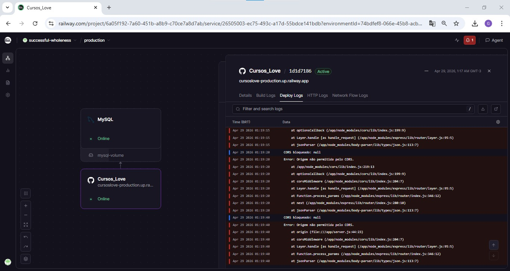
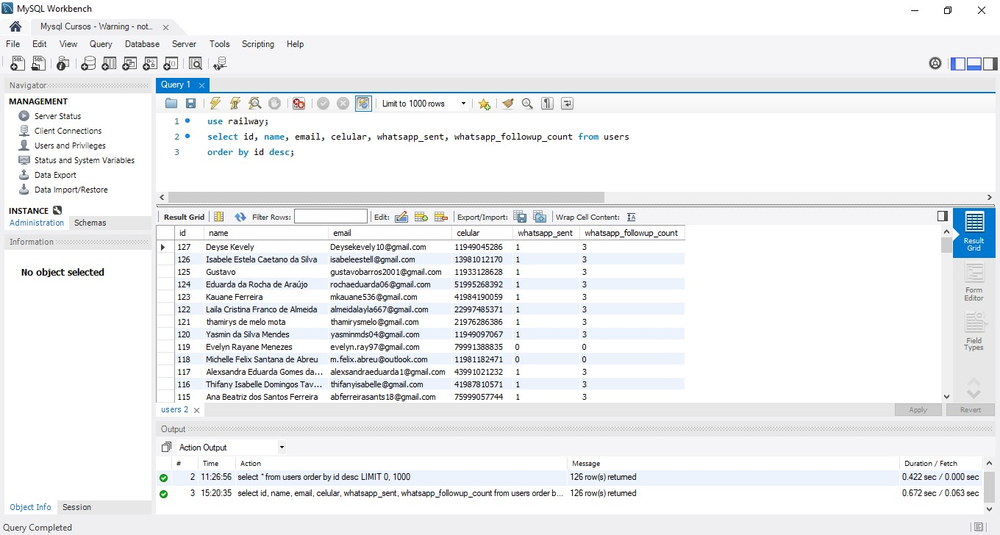
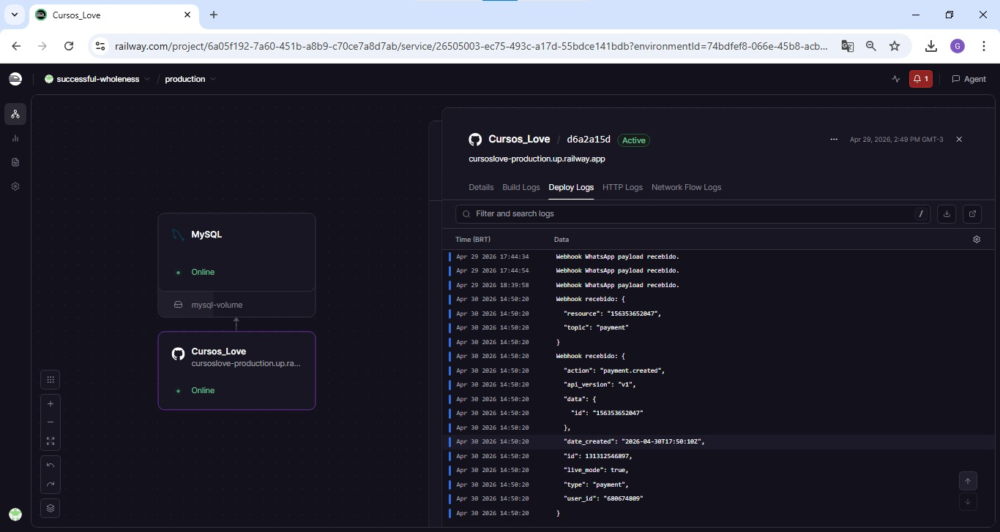
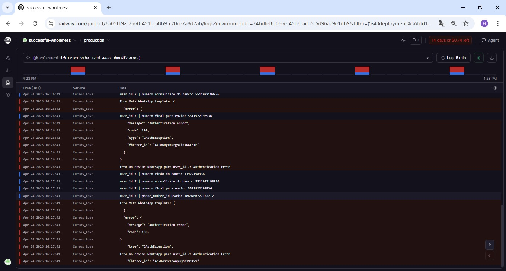

Dashboard
Inbox em tempo real para acompanhar conversas
Painel criado para visualizar mensagens enviadas e recebidas, status do bot, histórico do usuário e acompanhamento das interações captadas pelo MySQL.
Prints reais do desenvolvimento, deploy, banco de dados, logs e integrações usadas no projeto.

Painel criado para visualizar mensagens enviadas e recebidas, status do bot, histórico do usuário e acompanhamento das interações captadas pelo MySQL.

Estrutura de dados para acompanhar cadastro, telefone, pagamento, envio de WhatsApp e quantidade de follow-ups realizados para cada lead.

Logs usados para validar recebimento de eventos, envio de mensagens, conexão com APIs externas e comportamento do fluxo automatizado em produção.

Ajuste das origens permitidas e middleware no Express para liberar a comunicação entre site, dashboard e back-end de forma segura.

Revisão de token, phone number ID, variáveis de ambiente e chamada oficial da API para estabilizar o envio automático de mensagens.
Este projeto foi desenvolvido como uma solução completa para venda e entrega de um curso online, unindo página de vendas, cadastro de usuários, captação de leads, banco de dados, pagamento, automação via WhatsApp, chatbot inteligente e dashboard de acompanhamento.
O fluxo principal começa no site, onde o usuário acessa a página do curso e realiza o cadastro. Esses dados são armazenados no MySQL, permitindo acompanhar nome, e-mail, telefone, status de acesso, pagamento e histórico de interação. A partir disso, o sistema consegue identificar em qual etapa cada lead está dentro da jornada.
Após o cadastro, o usuário é direcionado para o pagamento. A integração com Mercado Pago registra o pagamento, acompanha o status da transação e libera automaticamente o acesso ao conteúdo quando o pagamento é aprovado. Caso o usuário se cadastre, mas não finalize a compra, ele entra em uma régua automatizada de recuperação.
Para leads que não concluíram o pagamento, o sistema aguarda um intervalo estratégico e inicia um follow-up automático pelo WhatsApp. O bot entra em contato de forma natural, identifica dúvidas, responde objeções e ajuda o lead a seguir para a compra, sem depender de abordagem manual imediata.
O chatbot foi estruturado para responder dúvidas sobre o curso, currículo, IA, Gupy, ATS, pagamento, acesso, problemas técnicos, certificado, primeiro emprego, transição de carreira e outras situações comuns. As respostas foram organizadas para orientar o usuário, gerar segurança e direcionar corretamente entre atendimento comercial e suporte técnico.
Também desenvolvi um dashboard/inbox para acompanhar as mensagens do chatbot. O painel busca as informações diretamente do banco de dados, usando o número de celular como referência para conectar usuário, mensagens enviadas, mensagens recebidas e status do bot. Dessa forma, é possível acompanhar as conversas praticamente em tempo real e intervir manualmente quando necessário.
Durante o desenvolvimento, enfrentei e resolvi problemas reais de produção. Um dos principais foi o erro de autenticação da API do WhatsApp/Meta, que impedia o envio das mensagens. A correção envolveu revisar token, phone number ID, variáveis de ambiente e configuração da chamada para a API oficial.
Outro ponto importante foi a normalização dos números de telefone. O sistema precisava lidar com celulares salvos em formatos diferentes no banco, com ou sem DDI, espaços, parênteses e traços. Para resolver isso, implementei uma lógica de limpeza e padronização dos números brasileiros antes do envio pelo WhatsApp.
Também corrigi problemas de CORS, que bloqueavam requisições entre o front-end, o dashboard e a API em produção. A solução foi ajustar as origens permitidas, liberar corretamente os métodos necessários e garantir que a comunicação entre site, painel e back-end funcionasse de forma segura.
Além disso, implementei controles para evitar disparos duplicados, pausa do bot, registro de mensagens de entrada e saída, delay estratégico antes do envio automático e organização dos logs no banco. Isso deixou o fluxo mais estável, rastreável e próximo de uma operação comercial real.
Esse projeto representa uma aplicação Full Stack completa, com front-end, back-end, banco de dados, integração com APIs externas, automação comercial, pagamento online, chatbot e dashboard. Mais do que uma página de curso, ele funciona como uma esteira automatizada de vendas, atendimento e recuperação de leads.